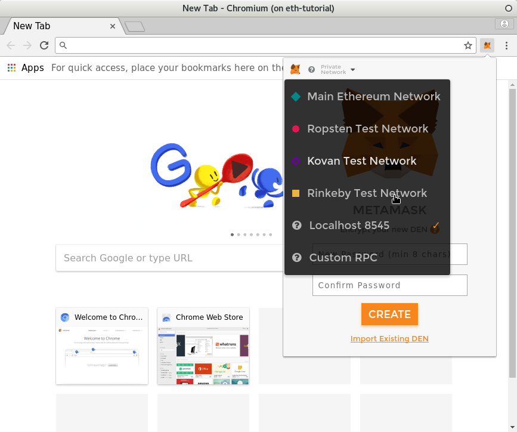
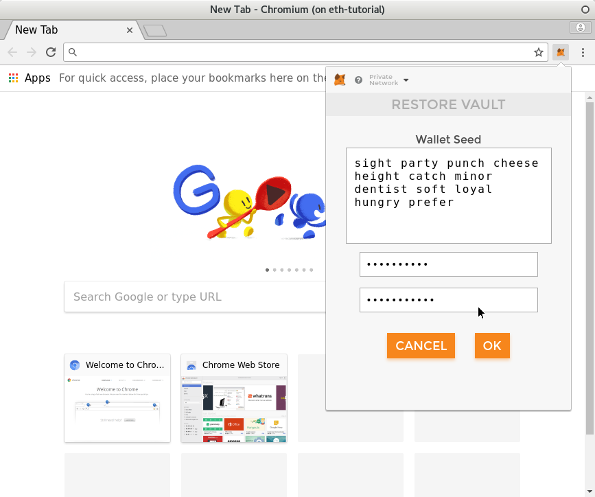
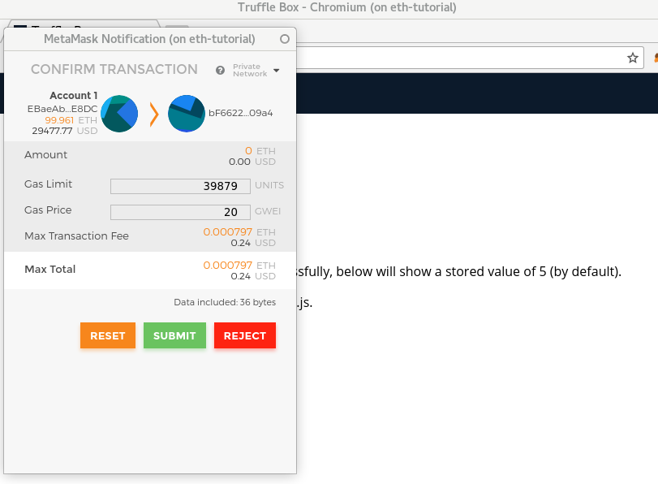
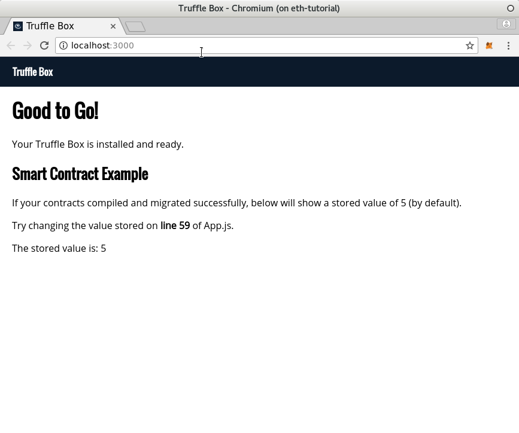

Before we write any code, lets get familliar with our toolchain. The truffle box we just set up comes with a working "Hello World!" type contract called SimpleStorage and an associated front end. They'll be just what we need to get to know Truffle for the first time.
Make sure you're in your app's route directory and list its contents:
$ ls
box-img-lg.png contracts package.json src truffle.js
box-img-sm.png migrations public test
config node_modules scripts truffle-config.js
There's a lot there, but we'll want to focus our attention on three directories in particular.
The contracts directory stores the solidity code that makes up the smart contracts themselves. We'll put the code for our Billboard contract here. The migrations directory contains javascript code that Truffle uses while deploying our contracts to the blockchain. Finally, the src directory contains the javascript source to the front end. If you take a look inside each, you'll see that the first two directories contain only a few files, while the third contains substantially more. We'll be adding a new file to contracts and modifying existing files in the other two.
Now that we've taken a look at the file structure, so next lets get a high-level understanding of what's going to happen.
Geth, but we'll use testrpc to simulate a blockchain.web3 library to interact with the deployed contract. In contrast to other web apps you might have seen, the client does not talk to the server while using the app and instead uses web3 (with the help of a plugin like metamask) to interact directly with the Blockchain.Open up a new terminal and run
$ testrpc
This starts the testrpc blockchain running. You'll need to leave it running through the next steps, and it will be useful to leave its terminal open, so that you can see that activity is happening in the testrpc window while you are running the other steps.
You'll notice that testrpc starts you off with ten addresses (with private keys). It's given you 100 ETH in each of these addresses (too bad it's just imaginary!). It also provides a mnemonic of 12 English words. You can use this later to obtain a wallet contianing the first of the addresses. Copy it down because we'll use it a few steps from now.
Every time you start testrpc (at least with the default settings), it generates a completely new blockchain, and a new set of addresses, and discards what has previously happened. If you ever want a clean slate (and you often will while testing) you can kill the process and start it again.
In the app's root directory, enter the command
$ truffle compile
You'll notice that the two contracts that were in contracts/ get compiled: Migrations, which is a tool Truffle uses to deploy the other contracts, and SimpleStorage, which is the one we're workign with in this chapter.
If you'd like, take a look in build/contracts. The compiler has put the two comiled contracts there, in json form, containing the compiled code and some additional information.
In the app's root directory, enter
$ truffle migrate
You'll see a flurry of activity in the terminal where you ran the command, and in the terminal running testrpc as well. This is truffle interacting with the blockchain that testrpc is simulating. It sends a transaction that deploys the SimpleStorage contract. As the sender this transaction, it uses the first address (number 0) that testrpc has created, and the transaction consumes some gas.
Before we launch the front end our app, let's get Metamask started up. If you have the plugin installed correctly, it's available as a small icon next to your address bar in Chromium.
With Chromium running, click on the MetaMask icon to start it up. First, click in the upper-left corner of Metamask to choose a network. We'll want "Localhost 8548" which is the one provided by testrpc.

Next, click on "Import..." at the bottom of Metamask. For the wallet seed, enter the mnemonic that testrpc gave us a few steps ago. Choose a password and your wallet will be ready, already containing testrpc's first address. Now that the wallet is imported, you can use the password you created to access it, until the next time you start testrpc, at whcih point you'll need to import from the mnemonic again.

You'll notice that the address holds a little less than 100 ETH. This is because you've already spent some on Gas while deploying the contracts with truffle migrate.
In the root of your project, run npm run dev This runs node's basic webserver on port 3000 and launches Chromium to connect to it. If metamask is present, it should give you a pop-up asking you to spend some gas on a transaction. Accept the transaction, and watch as the site reports that the contract holds the expected value.  
Not very exciting, is it? The app Truffle provided us doesn't do much, but it has givven us a chance to see how each of our tools looks when it's doing what it's supposed to. Next, we'll finally get started writing some code of our own.